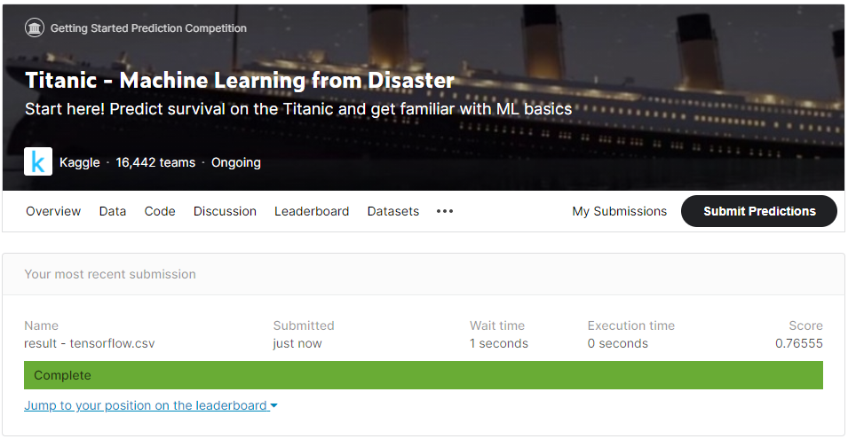

This is a simple implementation of Machine Learning model to predict if a passenger survived or not the Titanic's shipwreck.
This example is based on Kaggle's competition (https://www.kaggle.com/c/titanic) where they give a list of passengers and important information about them, and the aim is to predict if the passenger survived or not. You have to implement an algorithm to predict the survivance from another data set (in this example I use the table Test Table).
In this example, I use Tensorflow.JS to implement a simple machine learning algorithm to solve the related question.
The image below shows the result expected from the submission realized using the data prediction calculated using this algorithm. It got 76% accuracy.

Click in the button "Train the model" to run the training and compute the "Survival prediction".